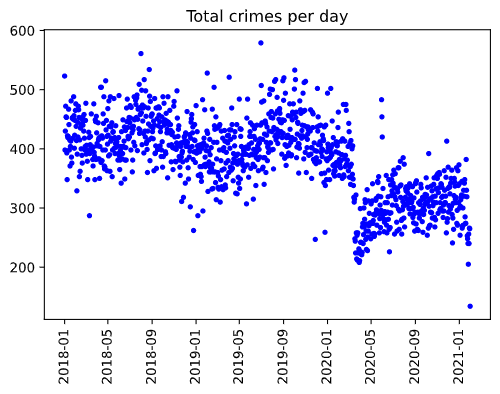

Methodology
- Link to data sources and analysis code:
- Explain the crime category definitions used in the SF public data
- Justify using data from 2019 only: show graph of crime reports over time,
decline after start of pandemic
- We want our analysis to generalize beyond the end of the pandemic, so we
focused on 2019 data to not deflate counts
-

- Justify using a 300 meter radius (though we might change the radius in the
final version)
| Radius/Location
|
16 Turk Street
|
1412 Market Street
|
851 Market Street
|
| 50 meters
|
0.63
|
0.28
|
0.077
|
| 150 meters
|
3.58
|
0.94
|
0.49
|
| 300 meters
|
15.87
|
4.33
|
3.32
|
| 600 meters
|
47.96
|
19.46
|
17.99
|